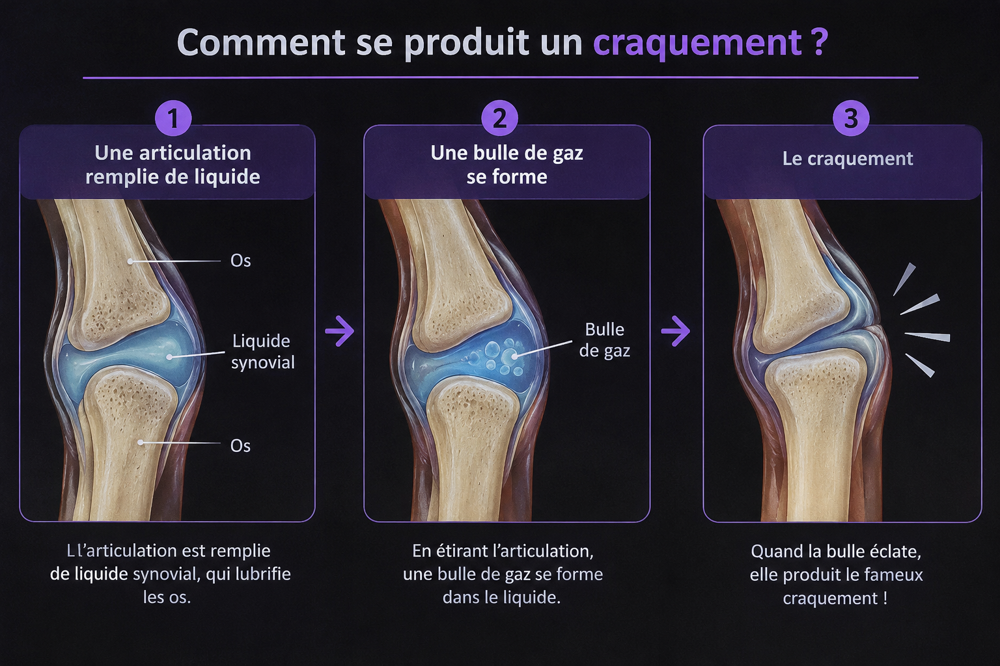

Avant le craquement
Les surfaces de l'articulation sont proches et baignent dans le liquide synovial.
Un bruit mystérieux, une croyance populaire et des décennies de recherche scientifique. Plongeons au cœur de nos articulations pour découvrir ce qui se passe réellement.
Explorer l'enquête ↓À L'INTÉRIEUR DE L'ARTICULATION
Contrairement à ce que l'on pourrait croire, le bruit ne signifie pas que nos os se cassent. Il est lié à un phénomène physique qui se produit dans nos articulations.

ZOOM SUR UNE ARTICULATION
Nos articulations contiennent un liquide appelé liquide synovial. Il permet de lubrifier les surfaces articulaires et facilite les mouvements.
Lorsque nous étirons une articulation, la pression à l'intérieur change. Une cavité contenant du gaz apparaît rapidement : ce phénomène est appelé cavitation.
La formation de cette cavité est associée au bruit caractéristique du craquement.
Le craquement ne correspond pas à un os qui se brise. Il est associé à un changement physique dans l'articulation.
Voici comment se déroule le phénomène lorsque nous faisons craquer une articulation.
Les surfaces de l'articulation sont proches et baignent dans le liquide synovial.
L'articulation est étirée. La pression change et une cavité se forme dans le liquide.
La formation rapide de la cavité est associée au bruit que nous entendons.
En 2015, des chercheurs ont observé ce phénomène grâce à l'imagerie par résonance magnétique.
Consulter l'étude →Et si quelqu'un décidait de vérifier personnellement cette croyance ? C'est exactement ce qu'a fait un médecin américain : Donald Unger.
Un médecin américain qui a voulu vérifier si faire craquer ses doigts pouvait réellement provoquer de l'arthrite.
🏆 Prix Ig Nobel de médecine — 2009Depuis son enfance, son entourage lui répétait que faire craquer ses doigts provoquerait de l'arthrite. Il décide alors de tester cette idée.
Il fait craquer les articulations de sa main gauche au moins deux fois par jour. En revanche, il laisse sa main droite comme main de comparaison.
Après 50 ans, il ne constate aucune arthrite dans ses deux mains et aucune différence apparente entre elles.
En 2009, Donald Unger reçoit le prix Ig Nobel de médecine. Il rapporte avoir continué cette habitude pendant plus de 60 ans au total.
Aucune arthrite constatée dans l'une ou l'autre de ses mains.
Une expérience originale qui remet en question une croyance populaire.Cette expérience est intéressante, mais elle ne porte que sur une seule personne. Elle ne suffit donc pas à prouver que le craquement des doigts est sans aucun risque pour tout le monde.
L'expérience de Donald Unger n'est pas la seule source d'information. D'autres chercheurs ont étudié le craquement des articulations.
Des chercheurs ont utilisé l'imagerie par résonance magnétique pour observer une articulation pendant son craquement. Ils ont mis en évidence la formation rapide d'une cavité.
Lire l'étude scientifique →Une publication du Journal of Family Practice rapporte que le craquement habituel des doigts pendant plusieurs décennies n'est pas associé à des signes cliniques ou radiographiques d'arthrose.
Consulter la publication →Les informations médicales disponibles ne montrent pas de lien établi entre le fait de faire craquer ses doigts et l'apparition de l'arthrite.
Lire l'article de Harvard →Vérifie tes connaissances avec ces trois petites questions !